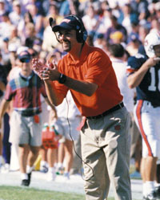

Behind the Scenes
Eddie Gran, RB's/Special Teams Coach
Eddie Gran is not your typical California boy. He didn't surf. He doesn't put avocado spread on everything. He listens to country music. His favorite meal is country-fried steak. "A lot of people think of the beach and that whole kind of life when they think of California," Gran said. "I went to the beach, of course, but I didn't surf. I was involved in sports. That was my life." Growing up in Escondido, Calif., Gran played high school football and baseball. One look at Gran's slender frame and it would be easy to guess he was a receiver, quarterback or defensive back. Guess again. "I was a nose guard my freshman and sophomore years," Gran said. "I was about 5-10, 155-160 pounds and started on the defensive line until my junior year when I became a wide receiver. By that time, some of those guys I was going up against were getting a little too big to handle." After moving to wide receiver, which he played at California Lutheran, Gran decided that he needed to stay involved with the game. Now, Gran has brought the love of the game that served him as a player to the Plains as the Tigers running backs and special teams coach. "I love the comradery with the players," Gran said. "There's nothing like the sport of football. Seeing a young man come in as a freshman and being able to build a relationship with him and watch him mature into a person through graduation is a great experience. You really do treat these kids like they are your own." Junior fullback Heath Evans is just one of the Tigers who has benefited from working with Gran the last two years.  "He has helped me become more physical and improved my consistency," Evans said. "He knows how to motivate me and push my buttons. He has high expectations for the running backs and knows how to get the best out of us." When Gran isn't helping mold Evans and the rest of the Tigers' running back corps into shape, he can usually be found with his wife, Rosemary, and three children, Hannah (6), Dillan Rivers (2) and Sydney (1). "We've gotten involved with United Methodist Church and have really enjoyed that," Gran said. "When we've got time to be together my three girls like to beat up on me. They love to wrestle. We have a game called Barney Wrestling, and I'm Barney. It used to be called WWF, but it's changed names." When Gran isn't serving as a human punching bag to his three daughters, he can usually be found in the great outdoors hunting or fishing. "After my coaching career is over, I see myself waking up each morning and going fishing for bass or crappie," Gran said. "As a kid I was more into trout and Deep Sea fishing. Since I've been living in the South, I've fallen in love with bass fishing. "I also hunt deer, quail, duck, moose and turkey. My 2-year-old and I killed a doe together this year. My little girls love it. We go out together and I teach them gun safety and we'll keep doing it until they say no." Of course, before Gran could teach his children how to hunt and fish someone had to teach him. Auburn head coach Tommy Tuberville and offensive line coach Hugh Nall introduced Gran to the thrills of hunting and fishing SEC style. "We taught him how to bass fish and how to hunt," Tuberville said. "You would never think he was from California just by talking to him. He has really taken to the South and loves everything about it. But we haven't been able to get him to take to grits yet." Whether Gran ever adds grits to his breakfast menu remains an uncertainty, but what is for certain is affection for living in the South. And no matter how high Gran's coaching career takes him, he plans on staying in Dixie. "I've fallen in love with the South and everything about it. I love the food, the people and the peaceful lifestyle," Gran said. "This is where I want to be." Up Close With Eddie GranWhat is your favorite game to play with your children?"Barney Wrestling. Luckily, I don't have to wear a big purple dinosaur suit."
If your life were made into a movie, which actor would you want to play you?
What has been your favorite car that you've owned?
Do you have any superstitions? |

© 1999 Auburn Network, Inc.